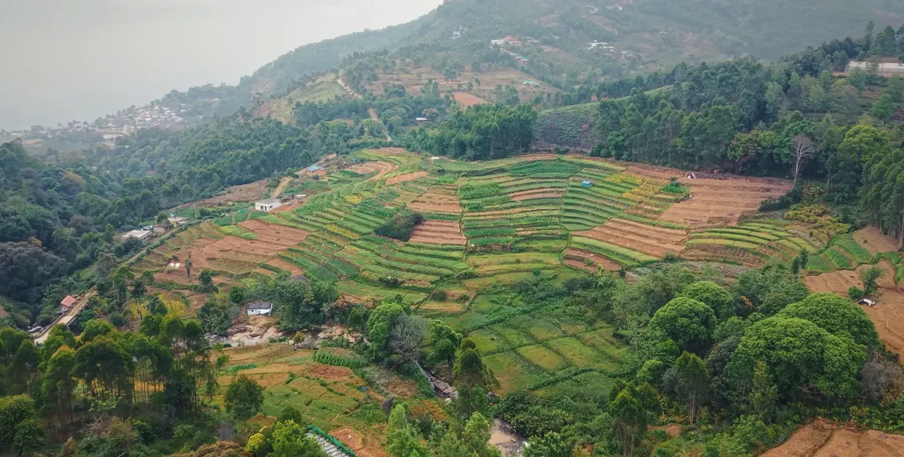

Seasonal agriculture
Fruit farms & orchards
Ask about responsible visits to apple, orange, plum, strawberry or other cool-climate farms when the host and season allow.

Farms · Views · Local routes
Discover seasonal farms, highland viewpoints, local jeep routes, waterfalls and heritage landscapes—with access and availability checked before travel.
What to experience
The best choice depends on season, weather, permissions, host availability and your group’s comfort. We check what is currently realistic before suggesting a route.
Seasonal agriculture
Ask about responsible visits to apple, orange, plum, strawberry or other cool-climate farms when the host and season allow.
Working farms
Learn about terraced fields and crops such as carrot, beans, garlic, potato and cabbage through an agreed agricultural visit.
Off-road sightseeing
Enquire about permitted routes, pickup, duration, road conditions, group size and vehicle suitability.
Guided nature
Ask about a guided nature walk through an appropriate local programme, with timing adjusted for weather and current access.
Village livelihoods
Where a host is available, learn about lemongrass oil-making or local silk and cotton weaving traditions.
Water & landscape
Build a route around suitable waterfalls, Pattisseri Dam and highland views after checking weather, visibility and access.
Marayoor extension
Explore appropriate dolmen landscapes, traditional jaggery production and pre-arranged local food experiences in neighbouring Marayoor.
Forest-administered
Chinnar or protected-forest activities should be considered only through the competent authority with the required guide and permission.
Travel responsibly
These are living farms, natural areas and local roads—not staged attractions. Permission, crop availability, forest rules and weather can affect what is possible on the day.

Ask about an experience
Include your date, group size, preferred experiences and any mobility needs. We will check current hosts, routes and access.